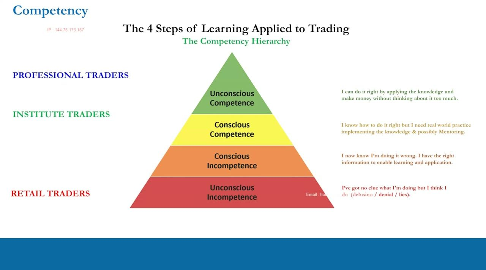
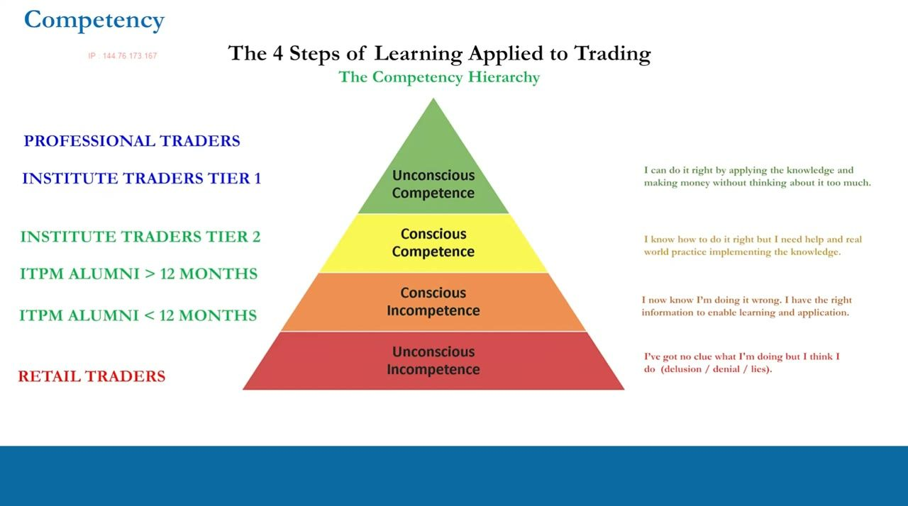
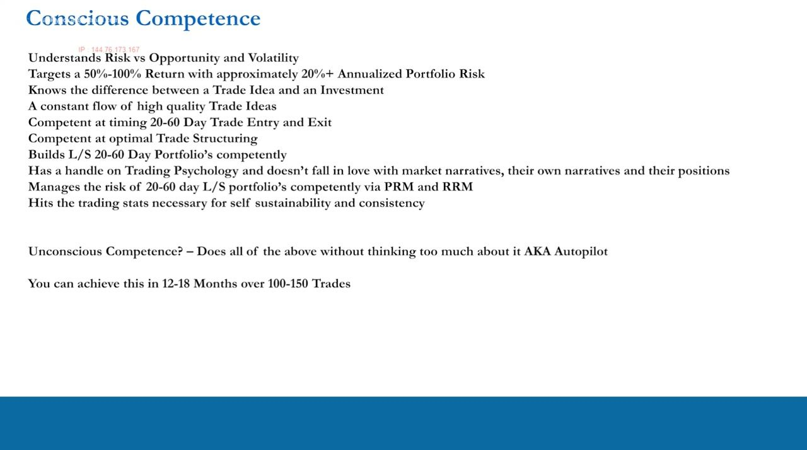
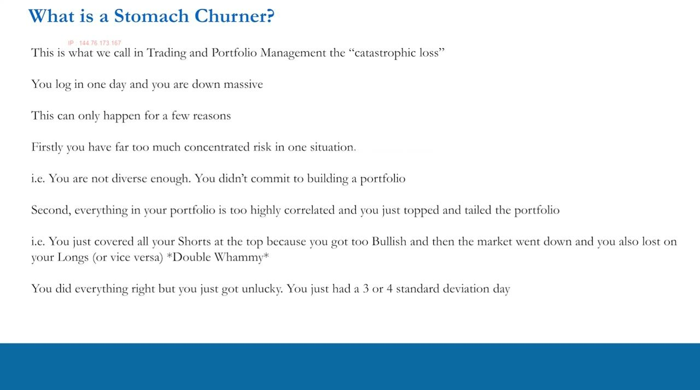
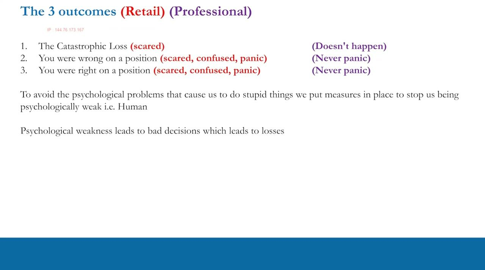
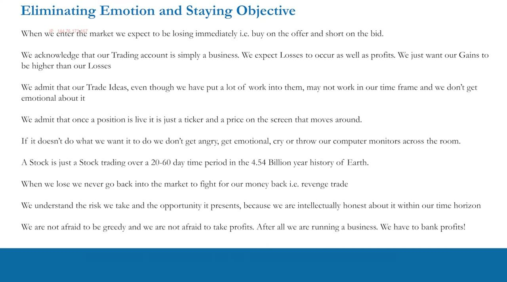
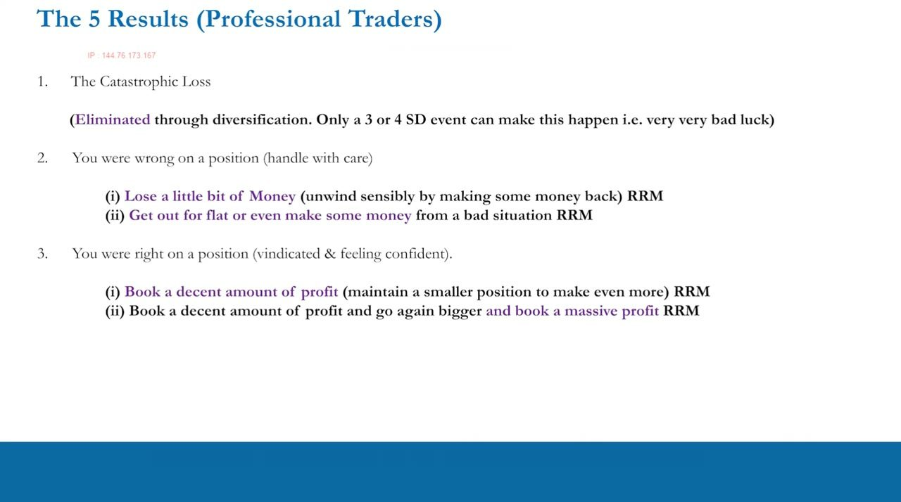
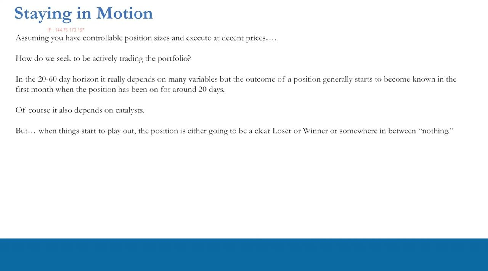
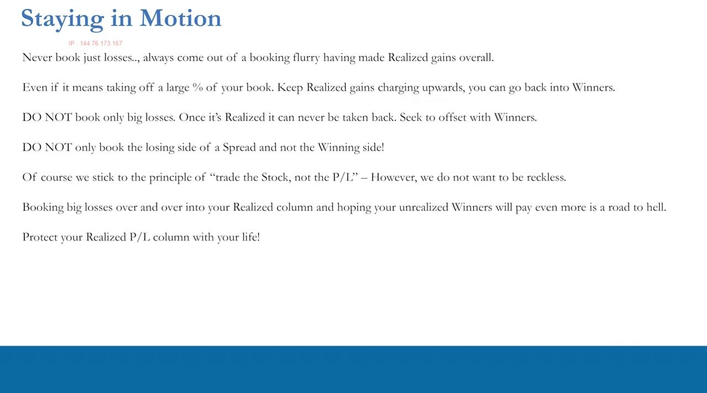
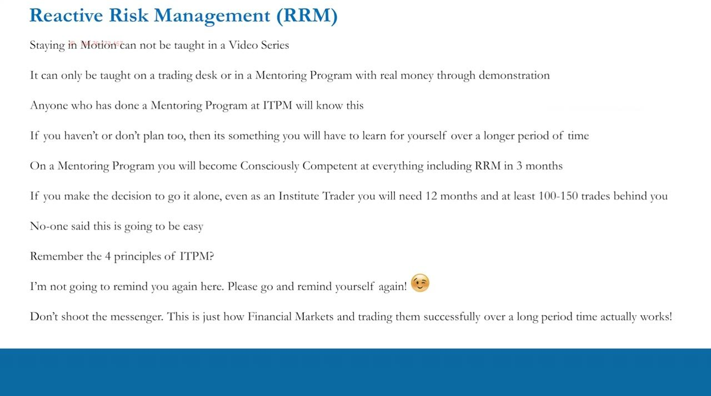

Eliminating Emotion, Staying Objective
Treat your trading account as a business, cage your ego, and climb the competency hierarchy through preventative and reactive risk management.
The final psychology video ties everything together: where you sit in the competency hierarchy, how professionals handle the three outcomes of any position, and why staying objective, banking P&L, and controlling ego are the difference between a business and a blow-up.
The gist
- The competency hierarchy has four tiers: unconscious incompetence (retail, going in circles) -> conscious incompetence (ITPM alumni under 12 months, now know they were doing it wrong) -> conscious competence (institute traders with 12+ months experience) -> unconscious competence (professionals on autopilot); Institute Traders Tier 1 sit at the SAME unconscious-competence tier as pros, differing only in being registered and regulated to trade other people's money.
- Conscious competence targets a 50-100% return with approximately 20%+ annualized portfolio risk, mastering 20-60 day timing, options trade structuring, L/S portfolios, trading psychology, and PRM & RRM; you can achieve unconscious competence in 12-18 months over 100-150 trades.
- A STOMACH CHURNER (catastrophic loss) has only a few causes: too much concentrated risk, correlation via topping-and-tailing (the 'double whammy' — stopped out of shorts on the way up, then stopped out of longs on the way down), or a genuine 3-or-4 standard deviation day where everything goes against you at once.
- In a diversified 10-position book (5 long / 5 short, equal weight), one position 50% against you is only -5% (50% / 10 positions); 100% against is -10% — both totally recoverable — so diversification plus low/negative correlation means only a rare 3-4 SD event can truly hurt you.
- There are only THREE outcomes on any position — catastrophic loss, wrong, or right; retail reacts with scared/confused/panic (freeze, average down from box A, or take profit too early from box B) while professionals treat the catastrophic loss as something that 'doesn't happen' and never panic.
- REACTIVE RISK MANAGEMENT (RRM / staying in motion) is acting on live positions versus PRM set before entry; its psychology is two-fold — fundamental confidence plus never being married to positions — and it can only be learned with real money or mentoring, so it 'can't be taught in a video series.'
- STAY IN MOTION by banking P&L: unrealized P&L is 'not real' (marked to market), realized is 'crystallized'; bank winners along the way to offset losers and 'keep the cash register ringing,' take medicine on losers past ~40 days (outcome usually known by ~20 days), and don't trade the P&L too often — never book only losses, and on a spread book both sides net-up before re-entering the winner; 'protect your realized column with your life.'
- The PERSPECTIVE MEDITATION zooms out for objectivity: Earth is approximately 4,540,000,000 years old, the human species approximately 200,000 years, 8,000 generations at 25 years each, and modern civilization only around 6,000 years = about 240 generations — so a single trade is 'a tiny piece of nothing.'
- EGO is the deepest retail-vs-pro divide: professionals acknowledge, embrace and cage their ego with measures to control it, whereas retail traders pretend to be humble, never acknowledge their ego, put no measures in place, and it destroys them; the fast track is 3 months mentored versus 12 months and 100-150 trades solo.
The Competency Hierarchy
- Four tiers: unconscious incompetence -> conscious incompetence -> conscious competence -> unconscious competence.
- Retail outside ITPM sits at unconscious incompetence — no clue but think they do, in a world of delusion, denial and lies.
- ITPM alumni with greater than 12 months experience and a certain number of trades climb into conscious competence.
- Professionals target unconscious competence, doing everything right on autopilot.
This is the map of trading development based on experience. This final psychology video exists so you understand exactly where you sit and what has to be done to keep climbing toward professional standard.

Institute Traders Tier 1 = Same Tier as Pros
- Institute Traders Tier 1 get consistent profitability from ITPM processes, high returns, pretty much on autopilot.
- They sit at unconscious competence — the SAME tier as professional traders.
- The only difference: pros are registered and regulated by their domestic regulator to trade other people's money (shareholder money at a bank, investor money at a hedge fund).
- Same input, same output, same behaviours — Tier 1 just trade their own money.
The gap between an elite retail trader and a professional is not skill but registration. Both take the same approach and generate the same return per unit of risk.

The Conscious-Competence Checklist
- Understands risk vs opportunity and volatility; targets a 50-100% return with approximately 20%+ annualized portfolio risk.
- Knows the difference between a trade idea and an investment; keeps a constant flow of high-quality trade ideas.
- Competent at 20-60 day entry/exit timing, optimal trade structuring (including options structures), and building L/S 20-60 day portfolios.
- Has a handle on psychology (not married to narratives or positions), manages risk via PRM & RRM, and hits the stats for self-sustainability.
- Unconscious competence = doing all of the above without thinking — autopilot; achievable in 12-18 months over 100-150 trades.
This is your next target: a concrete skills checklist. Once you can do every item without thinking about it, you have crossed into the professional standard.
The Head Scratcher
- A position you are in for all the right reasons but that is simply confusing — you did the work on a long, it never goes up, and it is now down 10%.
- It is probably not moving because you missed something fundamental or a catalyst — 'the technicals didn't play out' is a dumb excuse.
- There is no one-size-fits-all rulebook: every situation is judged on its own merits, and your options are literally endless, not a binary make $3 / lose $1.
- It is just one position — the outcome of the whole portfolio matters far more than any single name.
Because you run a correlated L/S book, no universal stop rule applies. The lesson is to stay objective and remember the portfolio, not the position, is what counts.

The Stomach Churner (Catastrophic Loss)
- You log in and the account is down a massive amount — sick to your stomach.
- Cause 1: too much concentrated risk in one situation (you never truly built a portfolio).
- Cause 2: everything too highly correlated and you topped-and-tailed — the 'double whammy': stopped out of all shorts on the way up, then all longs reverse and you book losses on both sides.
- Cause 3: a genuine three- or four-standard-deviation day where the vast majority of the book goes against you at once — that is just bad luck.
The catastrophic loss has only a handful of causes, and most are self-inflicted through concentration or correlation. Get these right and only a rare tail event can hurt you.

The Three Outcomes of Any Position
- Every position has exactly three outcomes: catastrophic loss, wrong, or right — nothing else, and that is beautifully simplistic.
- Catastrophic loss: retail freezes like a rabbit in the headlights (box A) or averages down; for pros this 'doesn't happen' — no panic, capital preservation, trade tomorrow.
- Wrong: retail is scared, confused and panicked; pros never panic, use PRM so it can't hurt too much, and apply RRM to limit damage.
- Right: retail feels euphoria yet is still scared/confused/panicked and takes profit too early (box B); pros stay objective and take the probabilistic right action.
The slide colours retail behaviour in red and professional behaviour in purple. Same three outcomes, opposite reactions — psychology is the whole difference.
The Perspective Meditation
- Earth is approximately 4,540,000,000 years old; the human species approximately 200,000 years.
- At 25 years per generation that is 8,000 generations; modern civilization is only around 6,000 years, about 240 generations.
- Against that scale a single trade is 'a tiny piece of nothing' — a totally meaningless action.
- The zoom-out visualization: rise out of your body, zoom out through neighbourhood, city, country, Earth, solar system, galaxy — then zoom all the way back with a clear head.
When you are scared, confused or panicked, this meditation restores objectivity. If the trade is meaningless in cosmic terms, there is never a reason to be emotional about it.

Home Truths of Financial Markets
- You are down instantly on entry: you buy on the offer, short on the bid, and P&L marks on the other side of the spread (e.g. buy at $25.73, marked at $25.72).
- Never expect to pick the bottom going long or the top going short — accept you'll be down immediately.
- The account is a business: expect losses as well as profits, just keep gains higher than losses.
- No revenge trading — the stock doesn't care what price you bought or sold; only the human cares, and emotion leads to bad decisions.
These absolute truths force realistic expectations. A stock is just a ticker over 20-60 days in the 4.54-billion-year history of Earth, so there is no reason to get emotional.

The Five Results
- Catastrophic loss: retail loses lots fast with no way back; pros rarely see it and can handle it if a 3-4 SD event hits.
- Wrong: retail loses a predetermined stop amount or a non-predetermined amount that spirals; pros book a small loss or trade out for flat/small gain.
- Right: retail takes a predetermined hard target too early (or targets are unrealistic and winners turn into losers); pros book a decent profit and keep a small position, OR book profit and go bigger.
- The whole difference in results flows from PRM and — most importantly — reactive risk management.
The three outcomes fan out into five results per trader type. Professionals convert bad situations into small losses or flats and winners into much larger wins.
Reactive Risk Management (Staying in Motion)
- RRM = actions on live positions; PRM = protections set before entry.
- Play the probabilities, not the possibilities — take the probabilistically right action over many situations.
- The psychology is two-fold: fundamental confidence (you did the homework, so run winners and stay in motion on losers) and never being married to positions.
- It can only be learned with real money or mentoring — it 'can't be taught in a video series' and has no rulebook for every stock forever.
This is what separates conscious from unconscious competence. You cannot script it, so it is acquired through real trades or by having a mentor on your shoulder.
Staying in Motion & Booking P&L
- The outcome is usually known by around 20 days; on losers beyond around 40 days, take your medicine and book the loss.
- Unrealized P&L is not real (marked to market); realized is crystallized — bank winners along the way to offset losers and keep the cash register ringing.
- Bookings come in clusters around volatility, not every day; don't trade the P&L too often — trade the stock while still running the business.
- On nothing positions, protect the downside but keep the upside open; trim to a controllable size and avoid trading on noise.
Running the account as a business means continually moving winners into the realized column to offset losers, while not churning positions just to book P&L.

The Do-Not Rules
- Never come out of a booking flurry having booked only losses — always end net-up in realized gains, even if it means taking off a large percentage of the account.
- On a spread trade, don't book only the losing side and run the winner — the winner can reverse and you lose on both sides.
- Instead book both sides of the spread net-up, then re-enter the winning side.
- 'Protect your realized column with your life' and keep it charging upwards — cha-ching.
These are the closest thing to a rulebook in reactive risk management. The realized column is the business; never let it go backwards on a net basis.

Timeline: Mentored vs Solo
- On an ITPM mentoring program you can reach conscious competence at everything, including RRM, within three months.
- Going solo (inside or outside ITPM) you need 12 months and at least 100-150 trades for the penny to drop.
- Diversification example: a 5L/5S equal-weight book with one name 50% against is -5%, 100% against is -10% — both recoverable.
- You can build robust PRM without giving up upside — still choose your level of risk and post great risk-adjusted returns.
There are two paths to competence. Either compress the learning curve with a mentor, or grind out the experience yourself over a year and 100-150 real trades.

Ego: The Deepest Divide
- The biggest difference between retail and pros in risk management is ego.
- Professionals recognize, acknowledge and embrace their ego, then put measures in place to stop it destroying them.
- Retail traders pretend to be humble, never acknowledge their ego, and have no measures — so it destroys them.
- The ironic perception that pros are arrogant is false — you cannot be consistently profitable with a big, uncontrolled ego.
This closes the psychology section. Understand human nature versus trading psychology, cage your ego, and keep the educational momentum going into the implementation phase.

Glossary
- Competency HierarchyFour experience-based tiers: unconscious incompetence, conscious incompetence, conscious competence, unconscious competence.
- Institute Traders Tier 1ITPM traders at unconscious competence — the same tier as pros, differing only in not being registered/regulated to trade other people's money.
- Stomach ChurnerThe catastrophic loss — a massive account drawdown caused by concentration, correlation (topping-and-tailing), or a 3-4 standard deviation day.
- Double WhammyBeing stopped out of all shorts on the way up, then stopped out of all longs on the way down, booking realized losses on both sides.
- Topping and TailingGetting stopped out of both sides of a correlated L/S book as the market moves up then reverses down.
- Head ScratcherA position entered for the right reasons that simply isn't moving, usually because a fundamental or catalyst was missed.
- PRMPreventative Risk Management — protections (diversification, low correlation, stops) set before entry to prevent the catastrophic loss.
- RRMReactive Risk Management — actions taken on live positions; also called staying in motion; learned only with real money or mentoring.
- Staying in MotionActively trading live positions and booking P&L rather than staring and doing nothing.
- Unrealized P&LLive positions marked to market at last price — 'not real' because the position is still on.
- Realized P&LP&L crystallized when a position is taken off — the business's cash register that you protect with your life.
- Trading the P&LBanking profits on winners along the way to offset losers; must not be done too often at the expense of trading the stock.
- Box A / Box BRetail error patterns: box A = averaging down / non-predetermined loss; box B = taking profit too early / predetermined target.
- Revenge TradingGoing back into the market emotionally to fight for lost money — the stock doesn't care, so it usually loses more.
- Perspective MeditationA zoom-out visualization (Earth 4.54bn years, species 200,000 years) to restore objectivity when scared, confused or panicked.